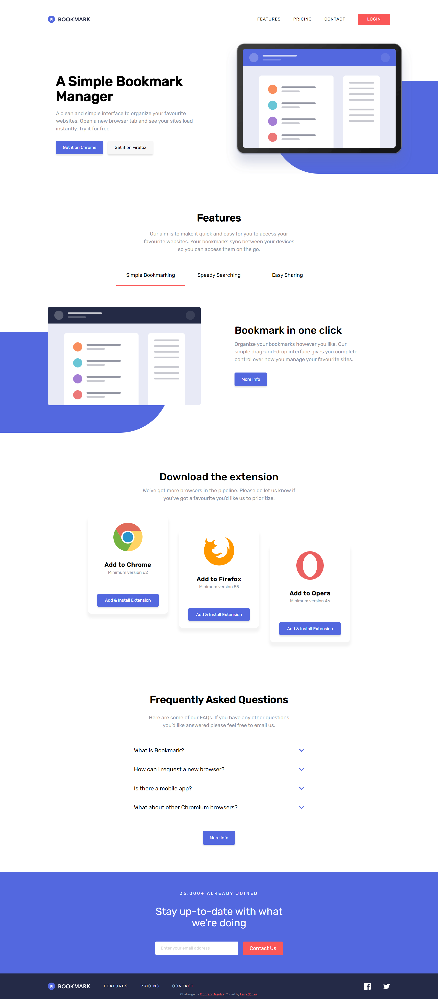

Levy Jr
Desenvolvedor Front-end
Crio sites para pessoas, lojas, comércios ou empresas para ajudá-los a alcançarem mais clientes e se destacarem de seus concorrentes no mercado.
Conhecimentos

Com meus conhecimentos em HTML, CSS e JavaScript, consigo fazer sites totalmente acessíveis, personalizados, customizados e animados para atender exatamente a sua demanda.
Projetos
-

Realidade Virtual
Landing Page para um estúdio produtor de óculos de realidade virtual. Projeto desenvolvido para fins de estudo.
Tecnologias utilizadas no projeto: HTML, CSS & JavaScript
-

Marca Páginas
Landing page para uma extensão marcadora de páginas, com manipulação de painel de guia, accordion e validação de formulário. Projeto desenvolvido para fins de estudos.
Tecnologias utilizadas no projeto: HTML, CSS & JavaScript
-
Agência de Sol
Landing page para uma agência de marketing. Simples e bonito. Projeto desenvolvido para fins de estudos.
Tecnologias utilizadas no projeto: HTML & CSS
-
Produto de uma Página E-commerce
Produto de uma página e-commerce, com carrossel de imagens e lightbox sobre o produto sem utilizar nenhuma biblioteca, com opção de adicionar o produto ao carrinho. Projeto desenvolvido para fins de estudos.
Tecnologias utilizadas no projeto: HTML, CSS & JavaScript